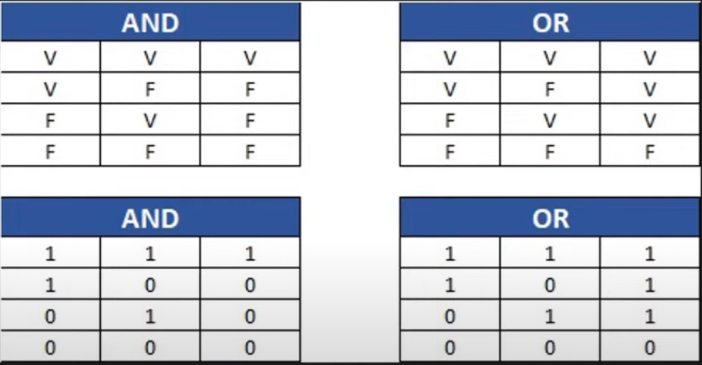

Operadores Lógicos em JavaScript
Os operadores lógicos permitem combinar expressões booleanas (true ou false) para
formar condições mais complexas.
O resultado também é sempre um valor booleano.
Principais Operadores
| Operador |
Nome |
Descrição |
Exemplo |
&& |
AND (E) |
Retorna true se todas as condições forem verdadeiras |
(5 > 2 && 10 > 5) → true |
|| |
OR (OU) |
Retorna true se pelo menos uma condição for verdadeira |
(5 > 10) \ (10 > 5) → true |
! |
NOT (NÃO) |
Inverte o valor lógico da expressão |
!(5 > 2) → false |
Tabelas Verdade
Operador AND (&&)
| A |
B |
A && B |
| true |
true |
true |
| true |
false |
false |
| false |
true |
false |
| false |
false |
false |
Operador OR (||)
| A |
B |
A |
| true |
true |
true |
| true |
false |
true |
| false |
true |
true |
| false |
false |
false |
Operador NOT (!)
| A |
!A |
| true |
false |
| false |
true |
Exemplos em Código
let a = true;
let b = false;
console.log(a && b);
console.log(a || b);
console.log(!a);
Outro exemplo prático:
let idade = 20;
let temCarteira = true;
if (idade >= 18 && temCarteira) {
console.log("Pode dirigir");
} else {
console.log("Não pode dirigir");
}
Resumindo
&& → Só retorna true se todos forem verdadeiros.|| → Retorna true se pelo menos um for verdadeiro.! → Inverte o valor lógico.
